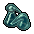

Advanced conical flasks
| Advanced conical flasks | |
|---|---|
 | |
General Information
| |
Type :
|
Glass Item |
Stack size:
|
30 |
Base Cost :
|
|
Source(s)
| |
Buy from :
|
None |
Sell to :
|
None |
| Furnace II, Furnace III | |
Study Information
| |
Study reward:
|
|
Technical Information
| |
Internal name:
|
glass_2 |

Advanced conical flasks are craft-able crafting resources, made in the furnace II onwards. They have a very limited usefulness, only being utilized during the construction of a few late-game workstations.
Conversely, while wasteful, these are one of the earliest sources of unlimited  Blue Tech Points.
Blue Tech Points.
Recipe
| Furnace II | ||
|---|---|---|
| Item Produced | Materials Required | Result |
| 3× Advanced conical flasks |
3× Conical flasks 1× Water |
2:30 - |
| Furnace III | ||
| Item Produced | Materials Required | Result |
| 3× Advanced conical flasks |
3× Conical flasks 1× Water |
2:00 - |
Study
| Study table | |||
|---|---|---|---|
| Tech Points | Resources Required | Energy | Notes |
| 5× Faith 5× Science |
- |
Not decomposable | |
Building
| Item Produced | Materials Required |
|---|---|
| Alchemy workbench (tier I) |
6× Wooden plank 3× Complex iron parts 2× Advanced conical flasks |
| Alchemy workbench (tier II) |
6× Jointing 2× Steel parts 3× Advanced conical flasks |
| Item Produced | Materials Required |
| Embalming table II |
10× Wooden plank 4× Steel parts 4× Advanced conical flasks |
| ||||||||